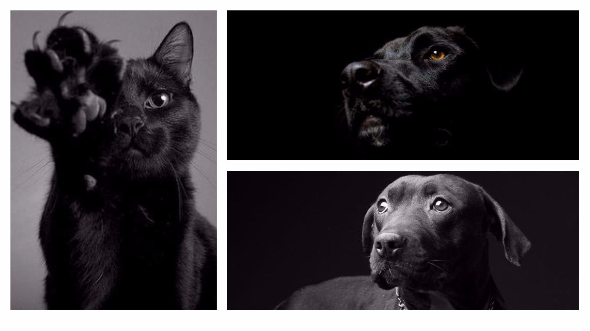

TAKE A PET


Take a pet é um site sem fins lucrativos que visa ajudar a divulgar e promover cães, gatos e outros animais comunitários ou desabrigados através de uma maneira simples e rápida para que consigam achar um lar e uma família para amá-los!



Teddy
Adotado dia 31 de Janeiro de 2017.

Buddy
Adotado dia 12 de Abril de 2017.

Lady
Adotada dia 14 de Abril de 2017.

Hunter
Adotado dia 20 de Março de 2017.
"Os cães são o nosso elo com o Paraíso. Eles não conhecem a maldade, a inveja ou o descontentamento. Sentar-se com um cão ao pé de uma colina numa linda tarde, é voltar ao Éden onde ficar sem fazer nada não era tédio, era paz."
- Milan Kundera